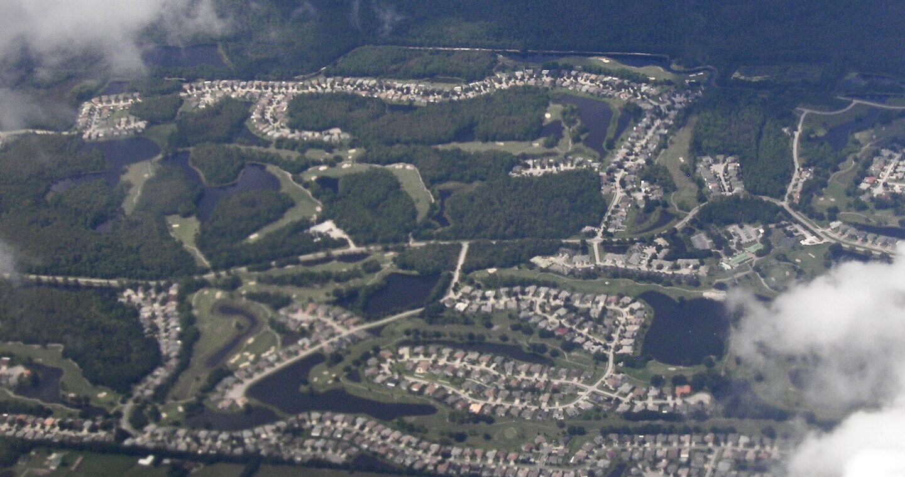

Protect our water. Open the door to better solutions.
Keystone–Odessa depends heavily on private wells and septic. This affects the ability to use some Countywide solutions when the community faces septic concentration, environmental conditions, and the need to protect water resources.


Septic systems
Wastewater is managed onsite through septic systems in many properties.
Groundwater
Septic systems and drinking-water wells share the same groundwater environment.
Private wells
Groundwater supplies drinking water to many properties.
When septic systems, private wells and groundwater are connected, water and wastewater planning becomes a health, safety and environmental issue.
The scale of septic is not a small issue.
Thousands of records in Odessa are classified as septic-related.
- 1,626 Known Septic
- 1,210 Likely Septic
- 251 Somewhat Likely Septic
A total of 3,087 records are in the three septic classification groups in the Odessa ZIP 33556 dataset.
Source: FLWMI septic classification, Odessa ZIP 33556. View the dataset in The Facts
This is an actual condition that the Keystone–Odessa planning framework must be able to address.
Septic systems have needed repairs for many years.
806 repair records show that this is an issue that has continued over time.
- 738 Known Septic
- 41 Likely Septic
- 27 Somewhat Likely Septic
Planning policy must be able to respond to the actual conditions of today.
What goes into the ground can reach the water we rely on.
Private wells draw from groundwater. When septic systems fail or wastewater is inadequately treated, contaminants can reach that water. Soil conditions, the number of systems and distance to wells matter.
What good is protecting a rural image if we don’t put water protection first?
Keeping Keystone–Odessa beautiful should include serious scrutiny of the rules governing water and wastewater infrastructure. No planning document should be beyond question.
Read the EPA guidanceProtect our water. Rethink the rules.
Our petition calls for retiring the Community Plan and changing the related restrictions, with health, safety and welfare at the centre of County decisions.
Read and sign the petitionSee the issues together, in the same place.
Turn layers on and off to see septic, repairs, wells and water-protection areas side by side.
Map layers
Keystone–Odessa · Hillsborough County
Our water. Fewer options. Why?
The County has water and sewer pathways for certain environmental problems, septic concerns and water-resource protection. Keystone–Odessa is expressly excluded from several of them. Why should our community accept fewer options for addressing these needs?
- 1
Real conditions. Real needs.
Private wells, septic systems and sensitive water resources make infrastructure choices important.
- 2
The County has tools to respond.
Specific policies allow consideration of connections for qualifying environmental and public-interest circumstances.
- 3
Keystone–Odessa: explicitly left out.
Policy 4.3.7 excludes this area from several of those pathways.
- 4
Why defend a restriction before considering a solution?
Preserving rural character should not put these policy choices beyond scrutiny.
The exclusions are written into policy.
One Water 4.3.7 excludes Keystone–Odessa from specified environmental, flood-prone septic and wellhead-area routes, plus the overriding-public-interest process. Read the criteria behind each route.
Read the exclusions — One Water 4.3.7Original document — link to be added
Source and page references
Source: County Comprehensive Plan One Water and Mobility. County compilation dated June 26, 2026. One Water 4.3.2–4.3.7: pp. 229–234. Mobility 5.1.2–5.1.4: p. 135. Constrained roads: pp. 250–251.
Our community deserves more than a closed door.
Sign our petition to retire the Community Plan and support the related County policy changes needed to reopen these options. Some connection routes remain available, including the documented public-health-hazard route.
Left out. By choice.
In 2024, the County expanded rural water and sewer options. Commissioners excluded Keystone–Odessa from several of them.
Staff supported consistency
Planning staff said safeguards addressed development concerns. Commissioners chose exclusion.
Read the 2024 staff reportOriginal document — link to be added
Health. Safety. Welfare.
One excluded utility review weighs these public interests. Why exclude Keystone–Odessa?
Read Policies 4.3.5 and 4.3.7Original document — link to be added
Reverse the exclusions. Open the options.
Sources: HC/CPA 23-18 · May 9, 2024 Board minutes · One Water 4.3.5 and 4.3.7.
Community Plan goal versus actual tools
The Community Plan places water protection as a top priority, but at the same time limits some tools that can be used to address water and wastewater issues.
Protect Water Resources
- Limited Water/Wastewater Options
- Countywide Pathways Excluded
Protecting water resources requires a planning framework that can respond to actual problems when they arise.
Supporting research and source qualifications
Open the door to prevention
Protecting water should mean evaluating every suitable tool before a problem becomes a crisis.
County Comprehensive Plan, One Water 4.3.2–4.3.7, pp. 229–234 (compilation June 26, 2026).
Protect rural character. Keep water options open.
County policy says utility service cannot justify higher density or incompatible rezoning.
County Comprehensive Plan, One Water 4.3.2–4.3.7, pp. 229–234.
Source detail on the 2024 exclusion
April 8, 2024 staff report, p. 7; May 9 minutes, Book 576, pp. 39–40; One Water 4.3.5 and 4.3.7, pp. 233–234. The specified-route exclusions include a pre-existing wellhead carveout; not every exclusion originated in 2024. The separate health-hazard route remains.
Read the May 9, 2024 Board minutes — Book 576, pages 39–40Original document — link to be added
Support went beyond planning staff
Water Resources staff supported the proposed rural reforms; Emergency Management said they aligned with mitigation goals. The Citizens Advisory Committee supported rural sewer options while preserving rural character.
HC/CPA 23-18 adoption packet: planning staff rationale pp. 5–7; EPC pp. 21–23; Water Resources and Emergency Management pp. 28–29; Citizens Advisory Committee p. 53. These comments support the rural utility reforms, not Safer Communities United or retirement of the Community Plan.
Read the 2024 staff report and agency commentsOriginal document — link to be added
Two approaches to the same issue.
| Keystone–Odessa Community Plan | Hillsborough County Comprehensive Plan |
|---|---|
| Relies heavily on private wells and septic | Has a broader water & wastewater framework |
| Limits some utility extensions | Has pathways for some environmental conditions |
| Does not have a specific equivalent safeguard for septic concentration | Has a pathway related to septic concentration under specified conditions |
| Some Countywide pathways are excluded | Has tools related to wellhead/wellfield protection |
| Water protection is a goal, but response options are more limited | Combines resource protection with infrastructure response |
See the data and records behind the issue.
The strongest sources behind this page. Each row shows the finding, source and date.
Dates marked “to be confirmed” will be checked against the original files before publication.